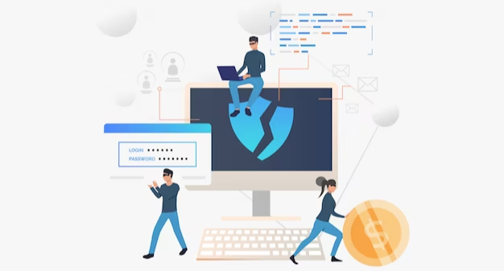
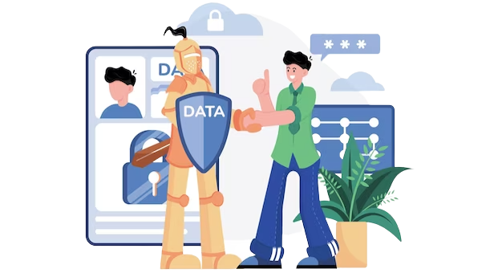

There are many ways that businesses can prevent spear phishing attacks from happening. One way is to educate employees on what spear phishing is and how to spot it. Another way is to have strong anti-spam filters in place to catch spear phishing emails before they reach employees. And finally, businesses can create policies and procedures to deal with spear phishing attacks when they do happen. If you are interested in spear phishing prevention go to phishprotection.com.
Since fighting phishing is all about detecting and avoiding common scams, all the knowledge that's pertained to combating them will apply to spear phishing, which is a strong baseline against these sorts of attacks. Never opening any links in e-mails is a good general rule in preventing much of the damage phishing attacks can cause.

Spear phishing is a more complex version of classic phishing. Thus, companies must make sure their policies refer to those tactics and implement solutions to strengthen their staff's protections to combat them effectively.
Spear phishing attacks often focus on one entity on average, but exceptionally narrow spear phishing attacks target the largest possible targets, such as one person holding a position of high authority. The most common term for this kind of -targeted phishing hyper is whaling.
While phishing attacks, on the other hand, target as many individuals as possible with a view that some will likely fall victim to the attack. These kinds of attacks are usually more effective than standard phishing attempts, as they require more effort while still relying on a low likelihood for success.
In reality, when a criminal sends a phishing email, they cast the widest net possible to cultivate a cooperative environment. To do this, they send spam-y messages, pretending to be legitimate companies, hoping to get inquisitive users to click a link or attachment, pages of which often contain dangerous viruses.

Phishing attacks have been around for a long time because they do not require a lot of resources to achieve their goal and are still moderately effective over the long run, making them attractive to cybercriminals. But as email security improves, common tactics used by cybercriminals to carry out phishing attacks are becoming more and more apparent, and those emails that do successfully get to their destination are decreasingly likely to fool the cautious users.
As a result, criminals are gravitating to new tactics to trick their victims with phishing emails. In a time when mass phishing methods are losing relevance, attackers are resorting to attack strategies that target more specific individuals. Spear phishing is one term for these strategies.
In summary, There are three ways to prevent spear phishing attacks. First, the use of a secure password manager is a good way to ensure a unique password is used for each website and service you use. Second, do not click on suspicious links or attachments. Third, implement two-factor authentication on all accounts you can. The only way to avoid getting phished is to be careful with the emails we open. If a link or attachment is suspicious or you get a message from someone you don't know, don't click on it and report it to your IT department.